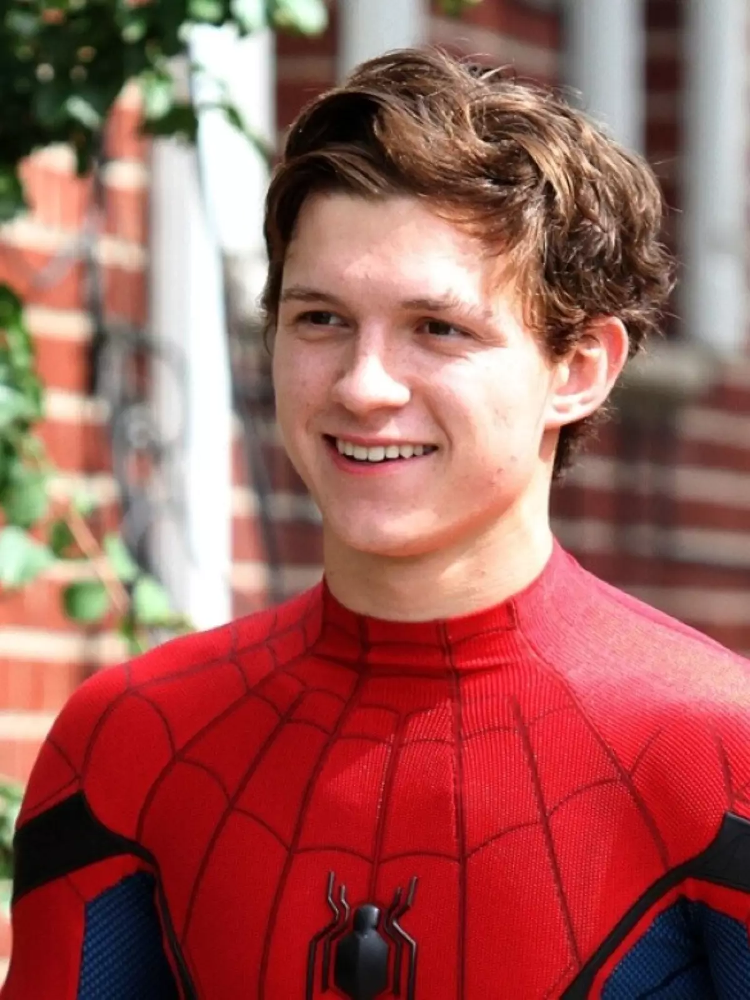
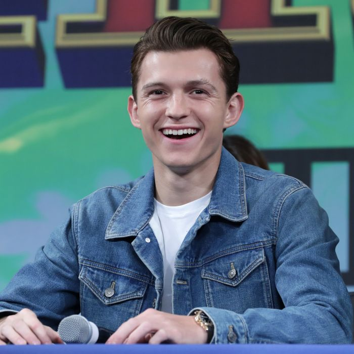

Thomas Stanley Holland.
Nascido em 1 de junho de 1996
(Londres, Inglaterra, Reino Unido)
26 anos
Nascido em 1 de junho de 1996
(Londres, Inglaterra, Reino Unido)
26 anos
Ao crescer, Holland considerou várias opções de carreira.
Quando criança, ele era fã das músicas de Janet Jackson e muitas vezes dançava com elas.
Sua mãe, impressionada com isso, o inscreveu para uma aula de dança, que foi anunciada na
escola particular que Holland estava visitando na época. Na adolescência, Holland frequentou
brevemente a escola de carpintaria em Cardiff, País de Gales. Em um ponto, ele considerou se
tornar um professor de escola primária, pois gosta de estar perto de crianças.
Melhores Filmes

O casal Maria e Henry está aproveitando as férias de inverno na Tailândia
junto com os três filhos pequenos. Mas em uma manhã, um tsunami de proporções devastadoras
atinge o local, arrastando tudo o que encontra pela frente. Separados em dois grupos,
a mãe e o filho mais velho vão enfrentar situações desesperadoras para se manterem vivos,
enquanto, o pai e as duas crianças menores não sabem se os outros dois ainda estão vivos.

Depois de lutar ao lado dos Vingadores, chegou a hora do jovem Peter
Parker voltar para casa em Nova York ao lado de sua tia May. Sob o olhar atento do mentor
Tony Stark, Peter começa a abraçar sua nova identidade como Homem-Aranha e combate
diariamente pequenos crimes nas redondezas. Ele acredita que encontrou a missão de sua
vida quando o terrível vilão Abutre surge ameaçando a cidade. O problema é que a tarefa
não será tão fácil como ele imaginava.

Peter Parker está em uma viagem de duas semanas pela Europa, ao lado de seus
amigos de colégio, quando é surpreendido pela visita de Nick Fury. Convocado para mais uma
missão heroica, ele precisa enfrentar vários vilões que surgem em cidades-símbolo do continente,
como Londres, Paris e Veneza, e também a aparição do enigmático Mysterio.
Galeria



"